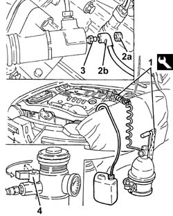
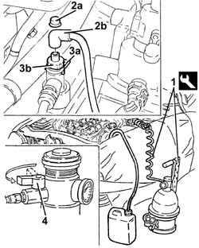

0010T67 hydraulic clutch system bleed air
- Path
- Procedures > 00 MAINTENANCE > 0010 NEW UNITS AND PLANNED MAINTENANCE'. > 0010T vehicle oil and fluids > 0010T67 hydraulic clutch system bleed air
- Kind
- repair procedure (removal / refitting; the operation number is the code)
- Applies to
- engines: 2.0 JTS, 3.2 V6, 1.9 JTD 16v, 2.0 JTS, 2.4 JTD 20v; all production periods
- Interactive page
- https://sloeber94.github.io/elrnDB-a156/en/#/3237417
Applies to: engines: 3.2 V6; all production periods
Proceed with 1820B08 Clutch release HYDRAULIC SYSTEM - Bleeding air and restoring level .
Applies to: engines: 2.0 JTS, 2.0 JTS; all production periods
Proceed with 1820B08 Clutch release HYDRAULIC SYSTEM - Bleeding air and restoring level .
Applies to: engines: 1.9 JTD 16v; all production periods
Proceed with removal 1016A10 sound-proofing cover - r + r .
1. Connect the tool to the brake-clutch fluid reservoir.
 | Name | Country |
|---|---|---|
1 | Brake/clutch bleeding equipment | 1.806.097.001 |
Proceed with removal 5530B10 battery - r+r .
Proceed with removal 5530B52 Battery DRIP TRAY/SUPPORT - R.R. .
2. Remove the protective cap (2a) and connect the recovery devices (2b) to the bleed valve on the clutch operating cylinder.
3. Open the bleed valve on the clutch master cylinder.
4. Slowly open the fluid reservoir cock.
Wait until all the air contained in the hydraulic clutch disengagement system has come out.
Close the bleed valve on the clutch operating cylinder and fit the protective cap.

Applies to: engines: 1.9 JTD 16v; all production periods
Remove the collection system.
Remove the bleed equipment.
| Name | Country |
|---|---|---|
- | Brake/clutch bleeding equipment | 1.806.097.001 |
Proceed with refitting 5530B52 Battery DRIP TRAY/SUPPORT - R.R. .
Proceed with refitting 5530B10 battery - r+r .
Check correct clutch disengagement and gear engagement.
Check the fluid level in the brake - clutch reservoir is correct.
Proceed with refitting 1016A10 sound-proofing cover - r + r .
Applies to: engines: 2.4 JTD 20v; all production periods
Proceed with removal 1016A10 sound-proofing cover - r + r .
1. Connect the tool to the brake-clutch fluid reservoir.
| Name | Country |
|---|---|---|
1 | Brake/clutch bleeding equipment | 1.806.097.001 |
Proceed with removal 5530B10 battery - r+r .
Proceed with removal 5530B52 Battery DRIP TRAY/SUPPORT - R.R. .
2. Remove protective cap (2a) and connect recovery device (2b) to the bleed valve on the hydraulic clutch control actuator.
3. Lift the retaining clip (3a) and withdraw the bleed device (3b) as much as necessary.
4. Slowly open the fluid reservoir cock.
Wait until all the air contained in the hydraulic clutch disengagement system has come out.
Refit the bleed system in its seating, secure it with the retaining clip and refit the protective cap in its seating.

Applies to: engines: 2.4 JTD 20v; all production periods
Remove the collection system.
Remove the bleed equipment.
| Name | Country |
|---|---|---|
- | Brake/clutch bleeding equipment | 1.806.097.001 |
Proceed with refitting 5530B52 Battery DRIP TRAY/SUPPORT - R.R. .
Proceed with refitting 5530B10 battery - r+r .
Check correct clutch disengagement and gear engagement.
Check the fluid level in the brake - clutch reservoir is correct.
Proceed with refitting 1016A10 sound-proofing cover - r + r .
Topics linked from this page (4)
- 1016A10 sound-proofing cover - r + r
- 1820B08 Clutch release HYDRAULIC SYSTEM - Bleeding air and restoring level
- 5530B10 battery - r+r
- 5530B52 Battery DRIP TRAY/SUPPORT - R.R.
Topics that link to this page (22)
- 1004B10 power unit with manual gearbox - r + r
- 1020D26 flywheel side oil seal cover - r+r
- 1024B10 engine flywheel - r + r for versions with manual gearbox
- 1810A20 clutch - r + r
- 1820A24 thrust bearing linkage - r + r
- 1820B15 hose from rigid intermediate pipe to master cylinder (pump) - r r with pedal unit removed for right hand drive versions
- 1820B20 (Pump) - MASTER CYLINDER R.R.
- 1820B21 (Pump) - MASTER CYLINER R.R. for right hand drive versions
- 1820B30 OPERATING CYLINDER/CLUTCH HYDRAULIC ACTUATOR - R.R.
- 1820B40 FLEXIBLE PIPE from clutch reservoir to (pump) - master cylinder R.R.
- 1820B45 RIGID supply PIPE from (pump) - master cylinder R.R .
- 1820B43 RIGID PIPE from clutch reservoir to (pump) - master cylinder R.R. for right hand drive versions
- 1820B51 Vibration damper RIGID inlet PIPE - R.R.
- 1820B47 rigid pipe from master cylinder (pump) to vibration damper - r r for right hand drive versions
- 1820B51 rigid input pipe to vibration damper - r r for rhd versions
- 1820B54 hose from damper - r r
- 1820B58 clutch hydraulic circuit vibration damper - r+r
- 2110A10 manual gearbox and differential - r + r
- 2110C22 gear input shaft seals - r r
- 3330C38 FLEXIBLE PIPE - FRONT section - from brake fluid RESERVOIR to (pump) - MASTER CYLINDER R.R. for right hand drive versions
- 3330C39 FLEXIBLE PIPE - REAR section - from brake fluid RESERVOIR to (pump) - MASTER CYLINDER R.R. on right hand drive versions
- 3340B53 rigid pipe (one) from master cylinder (pump) to abs hydraulic control unit - r r for rhd versions